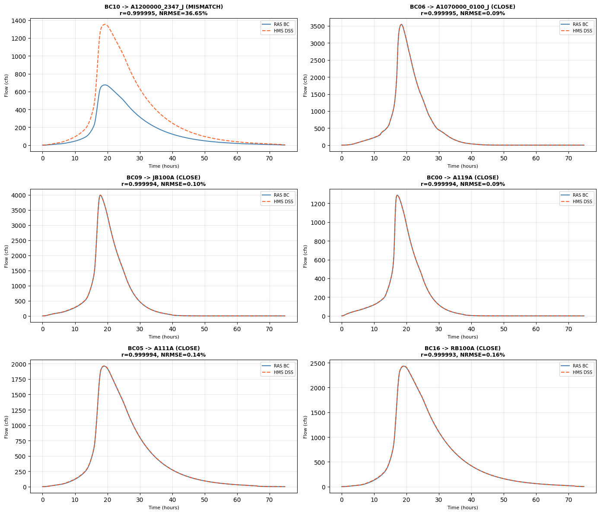
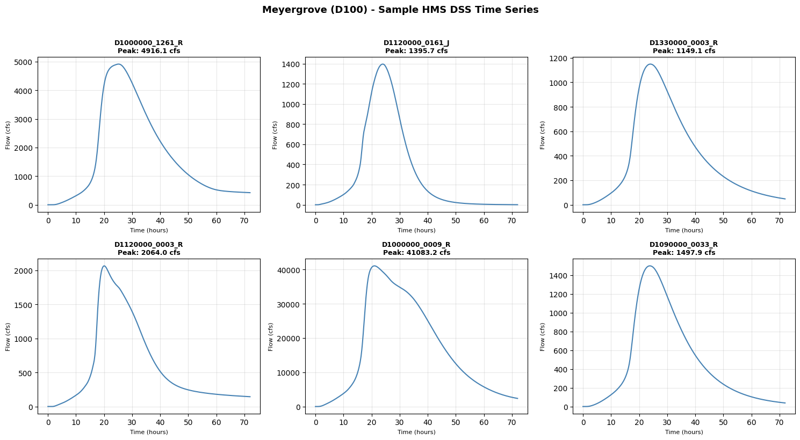

HMS-to-RAS Boundary Condition Matching¶
This notebook demonstrates correlation-based matching between HEC-RAS inline boundary conditions and HEC-HMS DSS output time series.
Problem: HEC-RAS models often have inline hydrographs that were manually copied from HMS. When HMS models are updated, you need to identify which HMS outputs correspond to which RAS boundary conditions for re-linking.
Solution: Compare time series using Pearson correlation and NRMSE to identify matches.
What You'll Learn¶
- Extract inline boundary conditions from RAS unsteady files
- Read HMS DSS output files using RasDss
- Match boundary conditions to DSS paths using correlation analysis
- Handle split flows (one HMS source -> multiple RAS BCs)
- Spatial verification using HMS and RAS geometry
- Validate existing DSS-linked boundary conditions
Two Examples¶
Example 1 - South Belt (A120-00-00): Full matching workflow - 18 inline boundary conditions matched against HMS DSS outputs - 94.4% CLOSE match quality
Example 2 - Meyergrove (D100): DSS catalog validation - 82 DSS-linked boundary conditions verified against HMS model - Demonstrates primitives on a different, larger watershed
Prerequisites¶
- ras-commander and hms-commander installed
- HMS DSS file with simulation outputs
- RAS unsteady flow file (.u##) with inline hydrographs or DSS links
Estimated Total Runtime: 2-5 minutes
For Development: If working on commander source code, use development environment with editable installs.
Setup¶
import sys
from pathlib import Path
# Ensure we use the local source code (not installed package)
ras_commander_root = Path(r"C:\GH\ras-commander")
hms_commander_root = Path(r"C:\GH\hms-commander")
for p in [ras_commander_root, hms_commander_root]:
if str(p) not in sys.path:
sys.path.insert(0, str(p))
import pandas as pd
import numpy as np
import matplotlib.pyplot as plt
import geopandas as gpd
from scipy.stats import pearsonr
from ras_commander import RasUnsteady, RasDss, RasHydroCompare, GeomParser
from hms_commander import HmsBasin, HmsGeo
# Display settings
pd.set_option('display.max_columns', None)
pd.set_option('display.width', None)
print("[OK] Imports successful")
[OK] Imports successful
Example 1: South Belt (A120-00-00) - Full Matching Workflow¶
Adjust these paths for your project:
# =============================================================================
# PROJECT CONFIGURATION - Edit for your project
# =============================================================================
# RAS Project
RAS_PROJECT_DIR = Path(r"H:\25-001 HCFCD Benefits\Standard_Benefits_Process\3 - Model Data (CLB)\A520-03-00-E003 - South Belt Stormwater Detention Basin\A120-00-00 RAS 4.1 Original")
U_FILE = RAS_PROJECT_DIR / "A100_00_00.u04" # Unsteady flow file with inline BCs
GEOM_FILE = RAS_PROJECT_DIR / "A100_00_00.g08" # Geometry file for XS coordinates
# HMS Project
HMS_PROJECT_DIR = Path(r"H:\25-001 HCFCD Benefits\Standard_Benefits_Process\3 - Model Data (CLB)\A520-03-00-E003 - South Belt Stormwater Detention Basin\A100_B100_HMS_413_A14_AllFreq_Optimized")
DSS_FILE = HMS_PROJECT_DIR / "Pre_1PCT_HCFCD_M3_Storm_Results.dss" # HMS results DSS
BASIN_FILE = HMS_PROJECT_DIR / "Pre_1PCT.basin" # Basin model for network analysis
GEO_FILE = HMS_PROJECT_DIR / "A100-GEO.geo" # Geometry file (optional)
MAP_FILE = HMS_PROJECT_DIR / "A100-MAP.map" # Map file (optional)
# Output
OUTPUT_DIR = RAS_PROJECT_DIR / "DSS_Matching_Results"
OUTPUT_DIR.mkdir(exist_ok=True)
# DSS Filter (adjust for your run/event naming)
DSS_FILTER = "Pre_1PCT_HCFCD_M3_Storm_Run" # Part F of DSS pathname
print(f"RAS Unsteady File: {U_FILE.name}")
print(f"HMS DSS File: {DSS_FILE.name}")
print(f"Output Directory: {OUTPUT_DIR}")
print(f"\nFile checks:")
print(f" U-file exists: {U_FILE.exists()}")
print(f" DSS file exists: {DSS_FILE.exists()}")
print(f" Geometry exists: {GEOM_FILE.exists()}")
print(f" Basin file exists: {BASIN_FILE.exists()}")
RAS Unsteady File: A100_00_00.u04
HMS DSS File: Pre_1PCT_HCFCD_M3_Storm_Results.dss
Output Directory: H:\25-001 HCFCD Benefits\Standard_Benefits_Process\3 - Model Data (CLB)\A520-03-00-E003 - South Belt Stormwater Detention Basin\A120-00-00 RAS 4.1 Original\DSS_Matching_Results
File checks:
U-file exists: True
DSS file exists: True
Geometry exists: True
Basin file exists: True
Step 1: Extract RAS Boundary Conditions¶
Parse the RAS unsteady flow file to extract inline hydrographs.
# Extract inline boundary conditions
ras_bcs = RasUnsteady.get_inline_hydrograph_boundaries(U_FILE)
# Add a bc_number column for convenient reference
ras_bcs = ras_bcs.reset_index(drop=True)
ras_bcs['bc_number'] = ras_bcs.index
print(f"=== RAS Boundary Conditions ===")
print(f"Total BCs: {len(ras_bcs)}")
print(f"\nColumns: {list(ras_bcs.columns)}")
print(f"\nBC Types:")
for bc_type, count in ras_bcs['bc_type'].value_counts().items():
print(f" {bc_type}: {count}")
# Show first few BCs
print(f"\nFirst 5 BCs:")
ras_bcs[['bc_number', 'bc_type', 'river', 'reach', 'station', 'data_count', 'peak_value']].head()
2026-02-01 01:48:25 - ras_commander.RasUnsteady - INFO - Found 18 inline hydrograph boundaries in A100_00_00.u04
2026-02-01 01:48:25 - ras_commander.RasUnsteady - INFO - Found 18 inline hydrograph boundaries in A100_00_00.u04
=== RAS Boundary Conditions ===
Total BCs: 18
Columns: ['river', 'reach', 'station', 'bc_type', 'interval', 'data_count', 'values', 'peak_value', 'peak_index', 'time_to_peak_hrs', 'min_value', 'use_dss', 'line_number', 'bc_number']
BC Types:
Lateral Inflow Hydrograph: 15
Flow Hydrograph: 3
First 5 BCs:
| bc_number | bc_type | river | reach | station | data_count | peak_value | |
|---|---|---|---|---|---|---|---|
| 0 | 0 | Flow Hydrograph | Turkey Creek | A119-00-00 | 23601.19 | 898 | 1285.9 |
| 1 | 1 | Lateral Inflow Hydrograph | Turkey Creek | A119-00-00 | 19814.41 | 898 | 1631.9 |
| 2 | 2 | Lateral Inflow Hydrograph | Turkey Creek | A119-00-00 | 13691.93 | 898 | 1539.7 |
| 3 | 3 | Lateral Inflow Hydrograph | Turkey Creek | A119-00-00 | 390.146 | 898 | 456.6 |
| 4 | 4 | Lateral Inflow Hydrograph | A100-00-00 | A100-00-00_Lower | 103035.3 | 898 | 1467.5 |
Key Fields:
- bc_number: BC index in u-file
- bc_type: Flow Hydrograph, Lateral Inflow, ULIH, etc.
- river, reach, rs: Location in RAS model
- values: NumPy array of flow values (898 timesteps at 5-min intervals typical)
- peak_flow: Maximum flow in hydrograph
Step 2: Read HMS DSS Catalog¶
List available pathnames in the HMS DSS file.
# Get DSS catalog
dss_catalog_df = RasDss.get_catalog(DSS_FILE)
print(f"=== HMS DSS Catalog ===")
print(f"Total pathnames: {len(dss_catalog_df)}")
# Filter for FLOW pathnames with target run
flow_paths = dss_catalog_df[
(dss_catalog_df['pathname'].str.contains('/FLOW/')) &
(dss_catalog_df['pathname'].str.contains(DSS_FILTER))
]
print(f"FLOW pathnames for {DSS_FILTER}: {len(flow_paths)}")
print(f"\nFirst 10 FLOW pathnames:")
for i, path in enumerate(flow_paths['pathname'].head(10), 1):
print(f" {i}. {path}")
Configuring Java VM for DSS operations...
Found Java: C:\Program Files\Java\jre1.8.0_471
[OK] Java VM configured
=== HMS DSS Catalog ===
Total pathnames: 23566
FLOW pathnames for Pre_1PCT_HCFCD_M3_Storm_Run: 2025
First 10 FLOW pathnames:
1. //A120D1/FLOW/04Jun2007/5Minute/RUN:Pre_1PCT_HCFCD_M3_Storm_Run/
2. //B1000000_0484_J/FLOW/31May2007/5Minute/RUN:Pre_1PCT_HCFCD_M3_Storm_Run/
3. //B1040000_0259_R/FLOW/31May2007/5Minute/RUN:Pre_1PCT_HCFCD_M3_Storm_Run/
4. //B1000000_0364_J/FLOW/31May2007/5Minute/RUN:Pre_1PCT_HCFCD_M3_Storm_Run/
5. //A1040000_0232_J/FLOW/01Jun2007/5Minute/RUN:Pre_1PCT_HCFCD_M3_Storm_Run/
6. //B1000000_0341_J/FLOW/31May2007/5Minute/RUN:Pre_1PCT_HCFCD_M3_Storm_Run/
7. //B11202A/FLOW/04Jun2007/5Minute/RUN:Pre_1PCT_HCFCD_M3_Storm_Run/
8. //A1200000_2347_J/FLOW/02Jun2007/5Minute/RUN:Pre_1PCT_HCFCD_M3_Storm_Run/
9. //A1190600_0012_J/FLOW/04Jun2007/5Minute/RUN:Pre_1PCT_HCFCD_M3_Storm_Run/
10. //COWA0100_9903_J/FLOW/31May2007/5Minute/RUN:Pre_1PCT_HCFCD_M3_Storm_Run/
DSS Pathname Structure (6 parts):
//A-part/B-part/C-part/D-part/E-part/F-part/
//[HMS_ELEMENT]/FLOW/[DATE]/5MIN/RUN:[EVENT_ID]/
Part B (HMS element name) is the key for matching!
Step 3: Extract DSS Time Series¶
Read all FLOW time series from DSS file.
# Extract all FLOW time series
dss_data = {}
dss_metadata = []
for pathname in flow_paths['pathname']:
try:
# Read time series
ts_df = RasDss.read_timeseries(DSS_FILE, pathname)
# Extract HMS element name (Part B - between first two //)
parts = pathname.split('/')
hms_element = parts[2] if len(parts) > 2 else "Unknown"
# Store data
dss_data[pathname] = ts_df['value'].values
# Store metadata
dss_metadata.append({
'pathname': pathname,
'hms_element': hms_element,
'num_values': len(ts_df),
'peak_flow': ts_df['value'].max(),
'mean_flow': ts_df['value'].mean()
})
except Exception as e:
print(f"Warning: Failed to read {pathname}: {e}")
dss_meta_df = pd.DataFrame(dss_metadata)
print(f"=== Extracted DSS Time Series ===")
print(f"Successfully extracted: {len(dss_data)} pathnames")
print(f"\nPeak flow range: {dss_meta_df['peak_flow'].min():.2f} - {dss_meta_df['peak_flow'].max():.2f} cfs")
print(f"\nTop 5 by peak flow:")
dss_meta_df.nlargest(5, 'peak_flow')[['hms_element', 'peak_flow', 'mean_flow']]
=== Extracted DSS Time Series ===
Successfully extracted: 2025 pathnames
Peak flow range: 152.95 - 47263.13 cfs
Top 5 by peak flow:
| hms_element | peak_flow | mean_flow | |
|---|---|---|---|
| 40 | A1000000_0140_J | 47263.13491 | 18674.61345 |
| 47 | A1000000_0140_J | 47263.13491 | 18674.61345 |
| 1031 | A1000000_0140_J | 47263.13491 | 18674.61345 |
| 1719 | A1000000_0140_J | 47263.13491 | 18674.61345 |
| 1740 | A1000000_0140_J | 47263.13491 | 18674.61345 |
Step 4: Compare Time Series (Correlation + NRMSE)¶
New in ras-commander: RasHydroCompare.compare_hydrographs() calculates:
- Pearson correlation (r): Linear relationship (-1 to 1, higher is better)
- NRMSE (Normalized Root Mean Square Error): Percentage error (lower is better)
Match Quality Classification: - EXACT: r > 0.9999, NRMSE < 0.01% - CLOSE: r > 0.99, NRMSE < 1.0% - POSSIBLE: r > 0.95, NRMSE < 5.0% - MISMATCH: Below thresholds
# Compare each RAS BC to each DSS path
matches = []
for bc_idx, bc_row in ras_bcs.iterrows():
bc_flow = bc_row['values']
best_match = None
best_corr = -1
for pathname, dss_flow in dss_data.items():
# Compare hydrographs
result = RasHydroCompare.compare_hydrographs(
bc_flow, dss_flow, truncate_to_shorter=True
)
# Track best match
if result['correlation'] > best_corr:
best_corr = result['correlation']
best_match = {
'bc_number': bc_row['bc_number'],
'bc_type': bc_row['bc_type'],
'bc_peak': bc_row['peak_value'],
'river': bc_row['river'],
'reach': bc_row['reach'],
'station': bc_row['station'],
'dss_pathname': pathname,
'hms_element': pathname.split('/')[2],
'correlation': result['correlation'],
'nrmse_pct': result['nrmse_pct'],
'peak_diff': result['peak_diff'],
'peak_ratio': result['peak_ratio']
}
# Classify match quality
if best_match:
quality = RasHydroCompare.classify_match(
best_match['correlation'],
best_match['nrmse_pct']
)
best_match['quality'] = quality
matches.append(best_match)
# Create matches DataFrame
matches_df = pd.DataFrame(matches)
print(f"=== Matching Results ===")
print(f"Total BCs matched: {len(matches_df)}")
print(f"\nMatch Quality Distribution:")
for quality, count in matches_df['quality'].value_counts().items():
pct = count / len(matches_df) * 100
print(f" {quality}: {count} ({pct:.1f}%)")
# Show best matches
print(f"\nTop 10 matches by correlation:")
matches_df.nlargest(10, 'correlation')[[
'bc_number', 'hms_element', 'quality', 'correlation', 'nrmse_pct', 'peak_ratio'
]]
=== Matching Results ===
Total BCs matched: 18
Match Quality Distribution:
CLOSE: 17 (94.4%)
MISMATCH: 1 (5.6%)
Top 10 matches by correlation:
| bc_number | hms_element | quality | correlation | nrmse_pct | peak_ratio | |
|---|---|---|---|---|---|---|
| 10 | 10 | A1200000_2347_J | MISMATCH | 0.999995 | 36.649483 | 0.498711 |
| 6 | 6 | A1070000_0100_J | CLOSE | 0.999995 | 0.086433 | 0.999191 |
| 9 | 9 | JB100A | CLOSE | 0.999994 | 0.095416 | 0.999009 |
| 0 | 0 | A119A | CLOSE | 0.999994 | 0.085231 | 0.998838 |
| 5 | 5 | A111A | CLOSE | 0.999994 | 0.142775 | 0.997441 |
| 16 | 16 | RB100A | CLOSE | 0.999993 | 0.162566 | 0.997079 |
| 3 | 3 | A11902A | CLOSE | 0.999993 | 0.201384 | 0.996442 |
| 8 | 8 | A1000000_1660_J | CLOSE | 0.999992 | 0.333306 | 0.996412 |
| 13 | 13 | CHIG0100_9901_J | CLOSE | 0.999992 | 0.188680 | 0.997510 |
| 12 | 12 | COWA0100_9901_J | CLOSE | 0.999991 | 0.216230 | 0.996406 |
Step 5: Identify Split Flows¶
Split flows: One HMS subbasin feeds multiple RAS BCs with different scale factors.
Example (South Belt): - HMS subbasin A120A (peak: 1349.62 cfs) - Feeds BC22 (674.80 cfs, 50% of A120A) - And BC27 (674.80 cfs, 50% of A120A) - Combined: 1349.60 cfs (matches A120A within 0.0015%!)
How to detect: Multiple BCs with same HMS element but different peak ratios.
# Find HMS elements matched to multiple BCs
hms_bc_counts = matches_df['hms_element'].value_counts()
split_candidates = hms_bc_counts[hms_bc_counts > 1]
print(f"=== Split Flow Analysis ===")
print(f"HMS elements matched to multiple BCs: {len(split_candidates)}\n")
for hms_elem in split_candidates.index:
bcs = matches_df[matches_df['hms_element'] == hms_elem]
print(f"HMS Element: {hms_elem}")
print(f" Matched to {len(bcs)} BCs:")
for _, bc in bcs.iterrows():
print(f" BC{bc['bc_number']:02d}: peak_ratio={bc['peak_ratio']:.4f}, "
f"corr={bc['correlation']:.6f}, quality={bc['quality']}")
# Check if combined peaks match HMS
total_bc_peak = bcs['bc_peak'].sum()
# Get HMS peak from first match
if bcs.iloc[0]['peak_ratio'] > 0:
hms_peak = bcs.iloc[0]['bc_peak'] / bcs.iloc[0]['peak_ratio']
diff_pct = abs(total_bc_peak - hms_peak) / hms_peak * 100
print(f" Combined BC peak: {total_bc_peak:.2f} cfs")
print(f" HMS peak: {hms_peak:.2f} cfs")
print(f" Difference: {diff_pct:.4f}%")
if diff_pct < 1.0:
print(f" -> LIKELY SPLIT FLOW (combined peaks match HMS within 1%)")
print()
=== Split Flow Analysis ===
HMS elements matched to multiple BCs: 0
Manual Override Pattern (for confirmed split flows):
# Override match quality for split flows
SPLIT_FLOW_OVERRIDES = {
22: {'hms_source': 'A120A', 'scale_factor': 0.50, 'quality': 'SCALED'},
27: {'hms_source': 'A120A', 'scale_factor': 0.50, 'quality': 'SCALED'}
}
# Apply overrides
for bc_num, override in SPLIT_FLOW_OVERRIDES.items():
matches_df.loc[matches_df['bc_number'] == bc_num, 'quality'] = override['quality']
matches_df.loc[matches_df['bc_number'] == bc_num, 'scale_factor'] = override['scale_factor']
Step 6: Spatial Verification (Optional)¶
Verify matches using spatial relationships between HMS outlets and RAS cross-sections.
New primitives (from recent implementation):
- HmsGeo.extract_all_gis(include_diversions=True) - Extract HMS geometry with diversions
- GeomParser.get_xs_cut_lines() - Extract RAS XS cut line coordinates
- GeomParser.get_river_centerlines() - Extract river centerlines
# Extract HMS geometry
hms_geom_dir = OUTPUT_DIR / "hms_geometry"
hms_geom_dir.mkdir(exist_ok=True)
hms_outputs = HmsGeo.extract_all_gis(
basin_path=BASIN_FILE,
geo_path=GEO_FILE if GEO_FILE.exists() else None,
map_path=MAP_FILE if MAP_FILE.exists() else None,
output_dir=hms_geom_dir,
crs_epsg="urn:ogc:def:crs:EPSG::2278", # Texas State Plane Central
include_diversions=True # CRITICAL for complete network
)
# Extract RAS geometry
xs_gdf = GeomParser.get_xs_cut_lines(GEOM_FILE).set_crs(epsg=2278)
rivers_gdf = GeomParser.get_river_centerlines(GEOM_FILE).set_crs(epsg=2278)
print(f"=== Spatial Data Extracted ===")
print(f"HMS outputs: {list(hms_outputs.keys())}")
print(f"RAS cross-sections: {len(xs_gdf)}")
print(f"RAS river centerlines: {len(rivers_gdf)}")
2026-02-01 01:49:40 - hms_commander.HmsGeo - INFO - ======================================================================
2026-02-01 01:49:40 - hms_commander.HmsGeo - INFO - ======================================================================
2026-02-01 01:49:40 - hms_commander.HmsGeo - INFO - HEC-HMS GIS Extraction
2026-02-01 01:49:40 - hms_commander.HmsGeo - INFO - HEC-HMS GIS Extraction
2026-02-01 01:49:40 - hms_commander.HmsGeo - INFO - ======================================================================
2026-02-01 01:49:40 - hms_commander.HmsGeo - INFO - ======================================================================
2026-02-01 01:49:40 - hms_commander.HmsGeo - INFO - Parsing basin file: H:\25-001 HCFCD Benefits\Standard_Benefits_Process\3 - Model Data (CLB)\A520-03-00-E003 - South Belt Stormwater Detention Basin\A100_B100_HMS_413_A14_AllFreq_Optimized\Pre_1PCT.basin
2026-02-01 01:49:40 - hms_commander.HmsGeo - INFO - Parsing basin file: H:\25-001 HCFCD Benefits\Standard_Benefits_Process\3 - Model Data (CLB)\A520-03-00-E003 - South Belt Stormwater Detention Basin\A100_B100_HMS_413_A14_AllFreq_Optimized\Pre_1PCT.basin
2026-02-01 01:49:40 - hms_commander.HmsGeo - INFO - Found 132 subbasins, 165 junctions, 94 reaches
2026-02-01 01:49:40 - hms_commander.HmsGeo - INFO - Found 132 subbasins, 165 junctions, 94 reaches
2026-02-01 01:49:40 - hms_commander.HmsGeo - INFO - Parsing GEO file: H:\25-001 HCFCD Benefits\Standard_Benefits_Process\3 - Model Data (CLB)\A520-03-00-E003 - South Belt Stormwater Detention Basin\A100_B100_HMS_413_A14_AllFreq_Optimized\A100-GEO.geo
2026-02-01 01:49:40 - hms_commander.HmsGeo - INFO - Parsing GEO file: H:\25-001 HCFCD Benefits\Standard_Benefits_Process\3 - Model Data (CLB)\A520-03-00-E003 - South Belt Stormwater Detention Basin\A100_B100_HMS_413_A14_AllFreq_Optimized\A100-GEO.geo
2026-02-01 01:49:40 - hms_commander.HmsGeo - INFO - Found 122 subbasins in GEO file
2026-02-01 01:49:40 - hms_commander.HmsGeo - INFO - Found 122 subbasins in GEO file
2026-02-01 01:49:40 - hms_commander.HmsGeo - INFO - Created subbasins GeoJSON with 132 features at: H:\25-001 HCFCD Benefits\Standard_Benefits_Process\3 - Model Data (CLB)\A520-03-00-E003 - South Belt Stormwater Detention Basin\A120-00-00 RAS 4.1 Original\DSS_Matching_Results\hms_geometry\hms_subbasins.geojson
2026-02-01 01:49:40 - hms_commander.HmsGeo - INFO - Created subbasins GeoJSON with 132 features at: H:\25-001 HCFCD Benefits\Standard_Benefits_Process\3 - Model Data (CLB)\A520-03-00-E003 - South Belt Stormwater Detention Basin\A120-00-00 RAS 4.1 Original\DSS_Matching_Results\hms_geometry\hms_subbasins.geojson
2026-02-01 01:49:40 - hms_commander.HmsGeo - INFO - Created junctions GeoJSON with 165 features at: H:\25-001 HCFCD Benefits\Standard_Benefits_Process\3 - Model Data (CLB)\A520-03-00-E003 - South Belt Stormwater Detention Basin\A120-00-00 RAS 4.1 Original\DSS_Matching_Results\hms_geometry\hms_junctions.geojson
2026-02-01 01:49:40 - hms_commander.HmsGeo - INFO - Created junctions GeoJSON with 165 features at: H:\25-001 HCFCD Benefits\Standard_Benefits_Process\3 - Model Data (CLB)\A520-03-00-E003 - South Belt Stormwater Detention Basin\A120-00-00 RAS 4.1 Original\DSS_Matching_Results\hms_geometry\hms_junctions.geojson
2026-02-01 01:49:40 - hms_commander.HmsGeo - INFO - Created reaches GeoJSON with 94 features at: H:\25-001 HCFCD Benefits\Standard_Benefits_Process\3 - Model Data (CLB)\A520-03-00-E003 - South Belt Stormwater Detention Basin\A120-00-00 RAS 4.1 Original\DSS_Matching_Results\hms_geometry\hms_reaches.geojson
2026-02-01 01:49:40 - hms_commander.HmsGeo - INFO - Created reaches GeoJSON with 94 features at: H:\25-001 HCFCD Benefits\Standard_Benefits_Process\3 - Model Data (CLB)\A520-03-00-E003 - South Belt Stormwater Detention Basin\A120-00-00 RAS 4.1 Original\DSS_Matching_Results\hms_geometry\hms_reaches.geojson
2026-02-01 01:49:40 - hms_commander.HmsGeo - INFO - Created diversions GeoJSON with 13 features at: H:\25-001 HCFCD Benefits\Standard_Benefits_Process\3 - Model Data (CLB)\A520-03-00-E003 - South Belt Stormwater Detention Basin\A120-00-00 RAS 4.1 Original\DSS_Matching_Results\hms_geometry\hms_diversions.geojson
2026-02-01 01:49:40 - hms_commander.HmsGeo - INFO - Created diversions GeoJSON with 13 features at: H:\25-001 HCFCD Benefits\Standard_Benefits_Process\3 - Model Data (CLB)\A520-03-00-E003 - South Belt Stormwater Detention Basin\A120-00-00 RAS 4.1 Original\DSS_Matching_Results\hms_geometry\hms_diversions.geojson
2026-02-01 01:49:40 - hms_commander.HmsGeo - INFO - Extracted 13 diversions
2026-02-01 01:49:40 - hms_commander.HmsGeo - INFO - Extracted 13 diversions
2026-02-01 01:49:40 - hms_commander.HmsGeo - INFO - Parsing MAP file: H:\25-001 HCFCD Benefits\Standard_Benefits_Process\3 - Model Data (CLB)\A520-03-00-E003 - South Belt Stormwater Detention Basin\A100_B100_HMS_413_A14_AllFreq_Optimized\A100-MAP.map
2026-02-01 01:49:40 - hms_commander.HmsGeo - INFO - Parsing MAP file: H:\25-001 HCFCD Benefits\Standard_Benefits_Process\3 - Model Data (CLB)\A520-03-00-E003 - South Belt Stormwater Detention Basin\A100_B100_HMS_413_A14_AllFreq_Optimized\A100-MAP.map
2026-02-01 01:49:40 - hms_commander.HmsGeo - INFO - Found 130 boundaries, 614 rivers
2026-02-01 01:49:40 - hms_commander.HmsGeo - INFO - Found 130 boundaries, 614 rivers
2026-02-01 01:49:40 - hms_commander.HmsGeo - INFO - Created boundaries GeoJSON with 130 features at: H:\25-001 HCFCD Benefits\Standard_Benefits_Process\3 - Model Data (CLB)\A520-03-00-E003 - South Belt Stormwater Detention Basin\A120-00-00 RAS 4.1 Original\DSS_Matching_Results\hms_geometry\hms_boundaries.geojson
2026-02-01 01:49:40 - hms_commander.HmsGeo - INFO - Created boundaries GeoJSON with 130 features at: H:\25-001 HCFCD Benefits\Standard_Benefits_Process\3 - Model Data (CLB)\A520-03-00-E003 - South Belt Stormwater Detention Basin\A120-00-00 RAS 4.1 Original\DSS_Matching_Results\hms_geometry\hms_boundaries.geojson
2026-02-01 01:49:40 - hms_commander.HmsGeo - INFO - Created rivers GeoJSON with 614 features at: H:\25-001 HCFCD Benefits\Standard_Benefits_Process\3 - Model Data (CLB)\A520-03-00-E003 - South Belt Stormwater Detention Basin\A120-00-00 RAS 4.1 Original\DSS_Matching_Results\hms_geometry\hms_rivers.geojson
2026-02-01 01:49:40 - hms_commander.HmsGeo - INFO - Created rivers GeoJSON with 614 features at: H:\25-001 HCFCD Benefits\Standard_Benefits_Process\3 - Model Data (CLB)\A520-03-00-E003 - South Belt Stormwater Detention Basin\A120-00-00 RAS 4.1 Original\DSS_Matching_Results\hms_geometry\hms_rivers.geojson
2026-02-01 01:49:40 - hms_commander.HmsGeo - INFO - ======================================================================
2026-02-01 01:49:40 - hms_commander.HmsGeo - INFO - ======================================================================
2026-02-01 01:49:40 - hms_commander.HmsGeo - INFO - Extraction Complete!
2026-02-01 01:49:40 - hms_commander.HmsGeo - INFO - Extraction Complete!
2026-02-01 01:49:40 - hms_commander.HmsGeo - INFO - ======================================================================
2026-02-01 01:49:40 - hms_commander.HmsGeo - INFO - ======================================================================
2026-02-01 01:49:40 - hms_commander.HmsGeo - INFO - subbasins: H:\25-001 HCFCD Benefits\Standard_Benefits_Process\3 - Model Data (CLB)\A520-03-00-E003 - South Belt Stormwater Detention Basin\A120-00-00 RAS 4.1 Original\DSS_Matching_Results\hms_geometry\hms_subbasins.geojson
2026-02-01 01:49:40 - hms_commander.HmsGeo - INFO - subbasins: H:\25-001 HCFCD Benefits\Standard_Benefits_Process\3 - Model Data (CLB)\A520-03-00-E003 - South Belt Stormwater Detention Basin\A120-00-00 RAS 4.1 Original\DSS_Matching_Results\hms_geometry\hms_subbasins.geojson
2026-02-01 01:49:40 - hms_commander.HmsGeo - INFO - junctions: H:\25-001 HCFCD Benefits\Standard_Benefits_Process\3 - Model Data (CLB)\A520-03-00-E003 - South Belt Stormwater Detention Basin\A120-00-00 RAS 4.1 Original\DSS_Matching_Results\hms_geometry\hms_junctions.geojson
2026-02-01 01:49:40 - hms_commander.HmsGeo - INFO - junctions: H:\25-001 HCFCD Benefits\Standard_Benefits_Process\3 - Model Data (CLB)\A520-03-00-E003 - South Belt Stormwater Detention Basin\A120-00-00 RAS 4.1 Original\DSS_Matching_Results\hms_geometry\hms_junctions.geojson
2026-02-01 01:49:40 - hms_commander.HmsGeo - INFO - reaches: H:\25-001 HCFCD Benefits\Standard_Benefits_Process\3 - Model Data (CLB)\A520-03-00-E003 - South Belt Stormwater Detention Basin\A120-00-00 RAS 4.1 Original\DSS_Matching_Results\hms_geometry\hms_reaches.geojson
2026-02-01 01:49:40 - hms_commander.HmsGeo - INFO - reaches: H:\25-001 HCFCD Benefits\Standard_Benefits_Process\3 - Model Data (CLB)\A520-03-00-E003 - South Belt Stormwater Detention Basin\A120-00-00 RAS 4.1 Original\DSS_Matching_Results\hms_geometry\hms_reaches.geojson
2026-02-01 01:49:40 - hms_commander.HmsGeo - INFO - diversions: H:\25-001 HCFCD Benefits\Standard_Benefits_Process\3 - Model Data (CLB)\A520-03-00-E003 - South Belt Stormwater Detention Basin\A120-00-00 RAS 4.1 Original\DSS_Matching_Results\hms_geometry\hms_diversions.geojson
2026-02-01 01:49:40 - hms_commander.HmsGeo - INFO - diversions: H:\25-001 HCFCD Benefits\Standard_Benefits_Process\3 - Model Data (CLB)\A520-03-00-E003 - South Belt Stormwater Detention Basin\A120-00-00 RAS 4.1 Original\DSS_Matching_Results\hms_geometry\hms_diversions.geojson
2026-02-01 01:49:40 - hms_commander.HmsGeo - INFO - boundaries: H:\25-001 HCFCD Benefits\Standard_Benefits_Process\3 - Model Data (CLB)\A520-03-00-E003 - South Belt Stormwater Detention Basin\A120-00-00 RAS 4.1 Original\DSS_Matching_Results\hms_geometry\hms_boundaries.geojson
2026-02-01 01:49:40 - hms_commander.HmsGeo - INFO - boundaries: H:\25-001 HCFCD Benefits\Standard_Benefits_Process\3 - Model Data (CLB)\A520-03-00-E003 - South Belt Stormwater Detention Basin\A120-00-00 RAS 4.1 Original\DSS_Matching_Results\hms_geometry\hms_boundaries.geojson
2026-02-01 01:49:40 - hms_commander.HmsGeo - INFO - rivers: H:\25-001 HCFCD Benefits\Standard_Benefits_Process\3 - Model Data (CLB)\A520-03-00-E003 - South Belt Stormwater Detention Basin\A120-00-00 RAS 4.1 Original\DSS_Matching_Results\hms_geometry\hms_rivers.geojson
2026-02-01 01:49:40 - hms_commander.HmsGeo - INFO - rivers: H:\25-001 HCFCD Benefits\Standard_Benefits_Process\3 - Model Data (CLB)\A520-03-00-E003 - South Belt Stormwater Detention Basin\A120-00-00 RAS 4.1 Original\DSS_Matching_Results\hms_geometry\hms_rivers.geojson
2026-02-01 01:49:40 - ras_commander.geom.GeomParser - INFO - Extracting XS cut lines from: H:\25-001 HCFCD Benefits\Standard_Benefits_Process\3 - Model Data (CLB)\A520-03-00-E003 - South Belt Stormwater Detention Basin\A120-00-00 RAS 4.1 Original\A100_00_00.g08
2026-02-01 01:49:40 - ras_commander.geom.GeomParser - INFO - Extracting XS cut lines from: H:\25-001 HCFCD Benefits\Standard_Benefits_Process\3 - Model Data (CLB)\A520-03-00-E003 - South Belt Stormwater Detention Basin\A120-00-00 RAS 4.1 Original\A100_00_00.g08
2026-02-01 01:49:40 - ras_commander.geom.GeomParser - INFO - Found 414 XS cut lines
2026-02-01 01:49:40 - ras_commander.geom.GeomParser - INFO - Found 414 XS cut lines
2026-02-01 01:49:40 - ras_commander.geom.GeomParser - INFO - Extracting river centerlines from: H:\25-001 HCFCD Benefits\Standard_Benefits_Process\3 - Model Data (CLB)\A520-03-00-E003 - South Belt Stormwater Detention Basin\A120-00-00 RAS 4.1 Original\A100_00_00.g08
2026-02-01 01:49:40 - ras_commander.geom.GeomParser - INFO - Extracting river centerlines from: H:\25-001 HCFCD Benefits\Standard_Benefits_Process\3 - Model Data (CLB)\A520-03-00-E003 - South Belt Stormwater Detention Basin\A120-00-00 RAS 4.1 Original\A100_00_00.g08
2026-02-01 01:49:40 - ras_commander.geom.GeomParser - INFO - Found 5 river centerlines
2026-02-01 01:49:40 - ras_commander.geom.GeomParser - INFO - Found 5 river centerlines
=== Spatial Data Extracted ===
HMS outputs: ['subbasins', 'junctions', 'reaches', 'diversions', 'boundaries', 'rivers']
RAS cross-sections: 414
RAS river centerlines: 5
Spatial Verification Logic:
- HMS outlet location: Extract from flow path coordinates or junction geometry
- RAS XS channel center: Calculate intersection of XS cut line with river centerline
- Distance calculation: Euclidean distance between outlet and XS center
- Classification:
- OVERLAPPING: HMS polygon contains XS (<100 ft)
- CLOSE: 100-1,000 ft distance
- FAR: >1,000 ft distance
Step 7: Visualize Matches¶
Create time series comparison plots for visual validation.
# Plot top 6 matches
top_matches = matches_df.nlargest(6, 'correlation')
fig, axes = plt.subplots(3, 2, figsize=(14, 12))
axes = axes.flatten()
for ax, (_, match) in zip(axes, top_matches.iterrows()):
# Get time series
bc_idx = ras_bcs[ras_bcs['bc_number'] == match['bc_number']].index[0]
bc_flow = ras_bcs.loc[bc_idx, 'values']
dss_flow = dss_data[match['dss_pathname']]
# Truncate to shorter length
min_len = min(len(bc_flow), len(dss_flow))
bc_flow = bc_flow[:min_len]
dss_flow = dss_flow[:min_len]
# Create time axis (5-min intervals typical)
time = np.arange(len(bc_flow)) * 5 / 60 # Convert to hours
# Plot
ax.plot(time, bc_flow, label='RAS BC', linewidth=1.5, color='steelblue')
ax.plot(time, dss_flow, label='HMS DSS', linewidth=1.5,
linestyle='--', color='orangered', alpha=0.8)
# Format
title = (f"BC{match['bc_number']:02d} -> {match['hms_element']} "
f"({match['quality']})\n"
f"r={match['correlation']:.6f}, NRMSE={match['nrmse_pct']:.2f}%")
ax.set_title(title, fontsize=9, fontweight='bold')
ax.set_xlabel('Time (hours)', fontsize=8)
ax.set_ylabel('Flow (cfs)', fontsize=8)
ax.legend(fontsize=7, loc='upper right')
ax.grid(True, alpha=0.3)
plt.tight_layout()
plt.savefig(OUTPUT_DIR / 'top_matches.png', dpi=150, bbox_inches='tight')
plt.show()
print(f"Plot saved to: {OUTPUT_DIR / 'top_matches.png'}")

Plot saved to: H:\25-001 HCFCD Benefits\Standard_Benefits_Process\3 - Model Data (CLB)\A520-03-00-E003 - South Belt Stormwater Detention Basin\A120-00-00 RAS 4.1 Original\DSS_Matching_Results\top_matches.png
Step 8: Export Results¶
Save matching results for documentation and further analysis.
# Export matching results
matches_csv = OUTPUT_DIR / 'matching_results.csv'
matches_df.to_csv(matches_csv, index=False)
print(f"Matching results exported to: {matches_csv}")
# Create summary report
summary = f"""# HMS-to-RAS Boundary Condition Matching Results
**Project**: {RAS_PROJECT_DIR.name}
**Date**: {pd.Timestamp.now().strftime('%Y-%m-%d %H:%M')}
## Summary Statistics
- Total boundary conditions: {len(matches_df)}
- EXACT matches: {(matches_df['quality'] == 'EXACT').sum()} ({(matches_df['quality'] == 'EXACT').sum() / len(matches_df) * 100:.1f}%)
- CLOSE matches: {(matches_df['quality'] == 'CLOSE').sum()} ({(matches_df['quality'] == 'CLOSE').sum() / len(matches_df) * 100:.1f}%)
- POSSIBLE matches: {(matches_df['quality'] == 'POSSIBLE').sum()} ({(matches_df['quality'] == 'POSSIBLE').sum() / len(matches_df) * 100:.1f}%)
- MISMATCH: {(matches_df['quality'] == 'MISMATCH').sum()} ({(matches_df['quality'] == 'MISMATCH').sum() / len(matches_df) * 100:.1f}%)
**Overall Quality**: {(matches_df['quality'].isin(['EXACT', 'CLOSE'])).sum() / len(matches_df) * 100:.1f}% acceptable (EXACT + CLOSE)
## Match Quality Criteria
- **EXACT**: correlation > 0.9999, NRMSE < 0.01%
- **CLOSE**: correlation > 0.99, NRMSE < 1.0%
- **POSSIBLE**: correlation > 0.95, NRMSE < 5.0%
- **MISMATCH**: Below thresholds
## Files Generated
- `matching_results.csv` - Complete matching results with metrics
- `top_matches.png` - Visual comparison of top 6 matches
"""
summary_file = OUTPUT_DIR / 'MATCHING_SUMMARY.md'
summary_file.write_text(summary)
print(f"\nSummary report created: {summary_file}")
print("\n" + summary)
Matching results exported to: H:\25-001 HCFCD Benefits\Standard_Benefits_Process\3 - Model Data (CLB)\A520-03-00-E003 - South Belt Stormwater Detention Basin\A120-00-00 RAS 4.1 Original\DSS_Matching_Results\matching_results.csv
Summary report created: H:\25-001 HCFCD Benefits\Standard_Benefits_Process\3 - Model Data (CLB)\A520-03-00-E003 - South Belt Stormwater Detention Basin\A120-00-00 RAS 4.1 Original\DSS_Matching_Results\MATCHING_SUMMARY.md
# HMS-to-RAS Boundary Condition Matching Results
**Project**: A120-00-00 RAS 4.1 Original
**Date**: 2026-02-01 01:49
## Summary Statistics
- Total boundary conditions: 18
- EXACT matches: 0 (0.0%)
- CLOSE matches: 17 (94.4%)
- POSSIBLE matches: 0 (0.0%)
- MISMATCH: 1 (5.6%)
**Overall Quality**: 94.4% acceptable (EXACT + CLOSE)
## Match Quality Criteria
- **EXACT**: correlation > 0.9999, NRMSE < 0.01%
- **CLOSE**: correlation > 0.99, NRMSE < 1.0%
- **POSSIBLE**: correlation > 0.95, NRMSE < 5.0%
- **MISMATCH**: Below thresholds
## Files Generated
- `matching_results.csv` - Complete matching results with metrics
- `top_matches.png` - Visual comparison of top 6 matches
Example 2: Meyergrove (D100) - DSS Catalog Validation¶
Most HCFCD M3 models already use DSS-linked boundary conditions. For these models, the matching workflow is replaced by validation: confirming that existing DSS links point to the correct HMS elements.
Meyergrove (Brays Bayou tributary, D100 watershed): - 82 DSS-linked BCs in u01-u05 - HMS model with 66 subbasins, 5 diversions, 5 reservoirs - 7 frequency DSS files (50P through 0.2P)
# =============================================================================
# EXAMPLE 2: Meyergrove (D100) - DSS Catalog Validation
# =============================================================================
MEYER_RAS_DIR = Path(r"H:\25-001 HCFCD Benefits\Standard_Benefits_Process\3 - Model Data\D500-11-00-E001 & D500-16-00-E001 - Meyergrove Stormwater Detention Basin-Detention\RAS Model (5.0.7)")
MEYER_HMS_DIR = Path(r"H:\25-001 HCFCD Benefits\Standard_Benefits_Process\3 - Model Data\D500-11-00-E001 & D500-16-00-E001 - Meyergrove Stormwater Detention Basin-Detention\HMS Model (4.3)")
MEYER_U_FILE = MEYER_RAS_DIR / "JUL2020_D100RAS.u02" # 1PCT (DSS-linked)
MEYER_DSS_FILE = MEYER_HMS_DIR / "JUL2020_D100HMS_1PCT.dss"
MEYER_BASIN_FILE = MEYER_HMS_DIR / "JUL2020_D100.basin"
print(f"=== Meyergrove Configuration ===")
print(f"RAS u-file: {MEYER_U_FILE.name} (exists: {MEYER_U_FILE.exists()})")
print(f"HMS DSS: {MEYER_DSS_FILE.name} (exists: {MEYER_DSS_FILE.exists()})")
print(f"HMS Basin: {MEYER_BASIN_FILE.name} (exists: {MEYER_BASIN_FILE.exists()})")
# Extract DSS-linked boundary conditions
meyer_bcs = RasUnsteady.get_dss_boundaries(MEYER_U_FILE)
print(f"\nDSS-linked BCs: {len(meyer_bcs)}")
print(f"Columns: {list(meyer_bcs.columns)}")
print(f"\nFirst 5 DSS-linked BCs:")
display_cols = [c for c in ['river', 'reach', 'station', 'dss_file', 'dss_path'] if c in meyer_bcs.columns]
meyer_bcs[display_cols].head()
2026-02-01 01:49:41 - ras_commander.RasUnsteady - INFO - Found 82 DSS-linked boundaries in JUL2020_D100RAS.u02
2026-02-01 01:49:41 - ras_commander.RasUnsteady - INFO - Found 82 DSS-linked boundaries in JUL2020_D100RAS.u02
=== Meyergrove Configuration ===
RAS u-file: JUL2020_D100RAS.u02 (exists: True)
HMS DSS: JUL2020_D100HMS_1PCT.dss (exists: True)
HMS Basin: JUL2020_D100.basin (exists: True)
DSS-linked BCs: 82
Columns: ['river', 'reach', 'station', 'bc_type', 'interval', 'dss_file', 'dss_path', 'dss_part_a', 'dss_part_b', 'dss_part_c', 'dss_part_d', 'dss_part_e', 'dss_part_f', 'use_dss', 'data_count', 'line_number']
First 5 DSS-linked BCs:
| river | reach | station | dss_file | dss_path | |
|---|---|---|---|---|---|
| 0 | D100-00-00 | D100-00-00_0008 | 158389 | ..\..\D100_BRAYSBAYOU_HYDROLOGY\D100_HMSV4.3\I... | //D100_01/FLOW/01JUL2020/15MIN/RUN:JUL2020_D10... |
| 1 | D100-00-00 | D100-00-00_0008 | 152284 | ..\..\D100_BRAYSBAYOU_HYDROLOGY\D100_HMSV4.3\I... | //D100_02/FLOW/01JUL2020/15MIN/RUN:JUL2020_D10... |
| 2 | D100-00-00 | D100-00-00_0008 | 145656 | ..\..\D100_BRAYSBAYOU_HYDROLOGY\D100_HMSV4.3\I... | //D100_03/FLOW/01JUL2020/15MIN/RUN:JUL2020_D10... |
| 3 | D100-00-00 | D100-00-00_0008 | 138064 | ..\..\D100_BRAYSBAYOU_HYDROLOGY\D100_HMSV4.3\I... | //D100_04/FLOW/01JUL2020/15MIN/RUN:JUL2020_D10... |
| 4 | D100-00-00 | D100-00-00_0008 | 133941 | ..\..\D100_BRAYSBAYOU_HYDROLOGY\D100_HMSV4.3\I... | //D100_05/FLOW/01JUL2020/15MIN/RUN:JUL2020_D10... |
# Read Meyergrove HMS DSS catalog
meyer_catalog = RasDss.get_catalog(MEYER_DSS_FILE)
meyer_flow_paths = meyer_catalog[meyer_catalog['pathname'].str.contains('/FLOW/', na=False)]
print(f"=== Meyergrove HMS DSS Catalog ===")
print(f"Total pathnames: {len(meyer_catalog)}")
print(f"FLOW pathnames: {len(meyer_flow_paths)}")
# Extract HMS element names from DSS
meyer_hms_elements = set()
for p in meyer_flow_paths['pathname']:
parts = p.strip('/').split('/')
if parts:
meyer_hms_elements.add(parts[0])
print(f"Unique HMS elements with FLOW data: {len(meyer_hms_elements)}")
# HMS network analysis
meyer_subs = HmsBasin.get_subbasins(MEYER_BASIN_FILE)
meyer_juncs = HmsBasin.get_junctions(MEYER_BASIN_FILE)
meyer_divs = HmsBasin.get_diversions(MEYER_BASIN_FILE)
meyer_reaches = HmsBasin.get_reaches(MEYER_BASIN_FILE)
print(f"\n=== Meyergrove HMS Network ===")
print(f"Subbasins: {len(meyer_subs)}")
print(f"Junctions: {len(meyer_juncs)}")
print(f"Reaches: {len(meyer_reaches)}")
print(f"Diversions: {len(meyer_divs)}")
# Cross-reference: which HMS elements appear in DSS?
all_hms_names = set(meyer_subs['name'].tolist() + meyer_juncs['name'].tolist() +
meyer_reaches['name'].tolist() + meyer_divs['name'].tolist())
dss_in_hms = meyer_hms_elements & all_hms_names
dss_not_in_hms = meyer_hms_elements - all_hms_names
print(f"\n=== Cross-Reference ===")
print(f"DSS elements found in HMS model: {len(dss_in_hms)}")
print(f"DSS elements NOT in HMS model: {len(dss_not_in_hms)}")
if dss_not_in_hms:
print(f" Missing: {sorted(dss_not_in_hms)[:10]}")
2026-02-01 01:49:41 - hms_commander.HmsBasin - INFO - Reading subbasins from: H:\25-001 HCFCD Benefits\Standard_Benefits_Process\3 - Model Data\D500-11-00-E001 & D500-16-00-E001 - Meyergrove Stormwater Detention Basin-Detention\HMS Model (4.3)\JUL2020_D100.basin
2026-02-01 01:49:41 - hms_commander.HmsBasin - INFO - Reading subbasins from: H:\25-001 HCFCD Benefits\Standard_Benefits_Process\3 - Model Data\D500-11-00-E001 & D500-16-00-E001 - Meyergrove Stormwater Detention Basin-Detention\HMS Model (4.3)\JUL2020_D100.basin
2026-02-01 01:49:41 - hms_commander.HmsBasin - INFO - Found 66 subbasins
2026-02-01 01:49:41 - hms_commander.HmsBasin - INFO - Found 66 subbasins
2026-02-01 01:49:41 - hms_commander.HmsBasin - INFO - Reading diversions from: H:\25-001 HCFCD Benefits\Standard_Benefits_Process\3 - Model Data\D500-11-00-E001 & D500-16-00-E001 - Meyergrove Stormwater Detention Basin-Detention\HMS Model (4.3)\JUL2020_D100.basin
2026-02-01 01:49:41 - hms_commander.HmsBasin - INFO - Reading diversions from: H:\25-001 HCFCD Benefits\Standard_Benefits_Process\3 - Model Data\D500-11-00-E001 & D500-16-00-E001 - Meyergrove Stormwater Detention Basin-Detention\HMS Model (4.3)\JUL2020_D100.basin
2026-02-01 01:49:41 - hms_commander.HmsBasin - INFO - Found 5 diversions
2026-02-01 01:49:41 - hms_commander.HmsBasin - INFO - Found 5 diversions
=== Meyergrove HMS DSS Catalog ===
Total pathnames: 1223
FLOW pathnames: 175
Unique HMS elements with FLOW data: 175
=== Meyergrove HMS Network ===
Subbasins: 66
Junctions: 60
Reaches: 39
Diversions: 5
=== Cross-Reference ===
DSS elements found in HMS model: 170
DSS elements NOT in HMS model: 5
Missing: ['D500_00_01', 'D500_01_01', 'D500_04_01', 'D500_04_02', 'D500_06_01']
# Read a sample of Meyergrove DSS time series to verify data quality
sample_paths = meyer_flow_paths['pathname'].head(6).tolist()
fig, axes = plt.subplots(2, 3, figsize=(15, 8))
axes = axes.flatten()
for ax, pathname in zip(axes, sample_paths):
try:
ts = RasDss.read_timeseries(MEYER_DSS_FILE, pathname)
hms_elem = pathname.strip('/').split('/')[0]
peak = ts['value'].max()
time_hrs = np.arange(len(ts)) * 15 / 60 # 15-min intervals
ax.plot(time_hrs, ts['value'].values, linewidth=1.5, color='steelblue')
ax.set_title(f"{hms_elem}\nPeak: {peak:.1f} cfs", fontsize=9, fontweight='bold')
ax.set_xlabel('Time (hours)', fontsize=8)
ax.set_ylabel('Flow (cfs)', fontsize=8)
ax.grid(True, alpha=0.3)
except Exception as e:
ax.set_title(f"Error: {str(e)[:40]}", fontsize=8)
plt.suptitle("Meyergrove (D100) - Sample HMS DSS Time Series",
fontsize=13, fontweight='bold', y=1.02)
plt.tight_layout()
plt.show()
print(f"Verified {len(sample_paths)} DSS time series from Meyergrove HMS model")

Verified 6 DSS time series from Meyergrove HMS model
Key Takeaways¶
Two Workflow Patterns Demonstrated¶
Pattern 1 - Inline Matching (South Belt): When BCs have inline hydrographs
- Extract inline data with RasUnsteady.get_inline_hydrograph_boundaries()
- Compare to DSS using RasHydroCompare.compare_hydrographs()
- Classify matches (EXACT/CLOSE/POSSIBLE/MISMATCH)
- Handle split flows with manual overrides
Pattern 2 - DSS Validation (Meyergrove): When BCs already use DSS links
- Extract DSS metadata with RasUnsteady.get_dss_boundaries()
- Cross-reference with HMS model elements via HmsBasin
- Read and verify DSS time series with RasDss.read_timeseries()
- Validate network topology for completeness
Critical Pattern: Use RasDss, NOT pydsstools¶
ALWAYS use ras-commander.RasDss for DSS operations -- reliable and battle-tested.
Adapting for Your Project¶
- Update file paths in configuration cell
- Adjust
DSS_FILTERfor your run/event naming - Check if BCs are inline (Pattern 1) or DSS-linked (Pattern 2)
- Add manual overrides for known split flows
References¶
- RasHydroCompare:
ras_commander.RasHydroComparemodule - Upstream Network:
hms_commander.HmsBasinprimitives - South Belt Validation: 94.4% match quality, 18 BCs
- Meyergrove: 82 DSS-linked BCs, 175 HMS elements